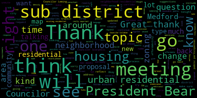
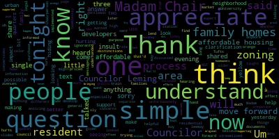
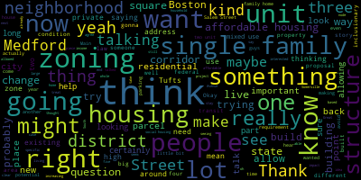
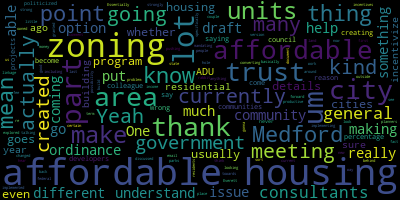
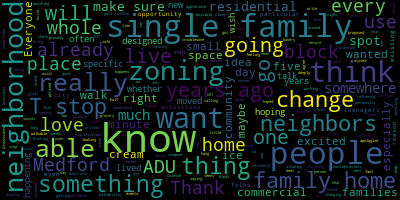

[Collins]: Yeah, I'm just getting oriented. All right, we have three, four, and six. OK, I can never remember who's who. OK. All right, thank you. All right, we'll get started now. There will be a meeting of the Medford City Council Planning and Permanent Committee, February 12th, 2025. This meeting will take place at 6 p.m. in the City Council Chamber, second floor, Medford City Hall, 85 Dorchby House Drive, Medford MA and via Zoom. Mr. Clerk, please call the roll.
[Hurtubise]: President Bears? Present. Councilor Callahan? Present. Councilor Leming? Present. Councilor Scarpelli? I see him on here. I can't see him. Oh, no. And then Vice President Collins.
[Collins]: Present. Five present, none absent. The meeting is called to order. Would you make sure that there's a co-host, please? No. Thank you. Sorry about that, George.
[Hurtubise]: Here's a co-host.
[Collins]: The action discussion item for this committee meeting is, as usual, paper 24-033, zoning ordinance updates with the Innes Associates team. This is our third committee meeting on the neighborhood and urban residential topic. We were introduced to this topic on January 15th. We got our first look at kind of a jumping off point proposal, um, around new categories for the residential areas of the city. We had some first impressions, questions, suggestions. Two weeks ago, we saw an updated draft from our zoning consultant and associates. Some of the boundaries had moved around. We were able to get a little bit more in depth On the differences between the various sub districts and Councilors also made a number of requests suggestions. On places where the boundaries between the various sub districts should move around to better accommodate the topography the geography, the types of residential types that are already existing in the various neighborhoods around Medford. So tonight being our third meeting on this topic, we have another amended proposal in front of us that I understand incorporates all of the questions and requests that were made over the past couple meetings. We're seeing for the first time kind of more specificity on the urban residential sub-districts under this topic. And just to quickly recap, the neighborhood residential sub districts and the urban residential sub districts. These propose five new ways of categorizing existing residential districts throughout the community, creating a more modernized and more thoughtful gradient from our lowest density areas, residential areas of the city, up to our highest density residential areas of the city. And this is informed by, you know, Topography, geography, what the land allows, what the streets allow, the types of houses and homes that are already built around the community, and proximity to things that encourage greater density, such as transit, places where there are many jobs concentrated together. So I understand that tonight we have a couple, a number of new diagrams to look at and respond to, new proposals for boundaries between the various neighborhood residential sub-districts and urban residential sub-districts, as well as a new map that superimposes the new sub-districts on top of existing residential types in Medford. And I think this is reflecting some of the requests that councilors made two weeks ago asking for some areas that were, for example, Neighborhood Residential 2 to become Neighborhood Residential 1 again to reflect existing neighborhood character suggestions of that nature. So unless there are any initial comments from city staff or Councilors, I'll first turn it over to NS Associates for a presentation as usual, and then we can discuss. All right, seeing none, I will turn it over to NS Associates whenever you are ready.
[Innes]: Thank you very much. Good evening everyone Emily and us from NS Associates and I'm here with power almost Martinez. I'm actually going to turn it over to power so you can see the work that we've done since the last meeting. And then after the presentation or even during if you have specific questions, or we're happy to address any comments or concerns you may have.
[Ramos]: Thank you very much. If I may, Madam Chair. So in this, today we are going to go also through the process timeline, the plan 2025, the opportunity when those public comments can be done, some introduction analysis, and then the different versions that we have done for this proposal until the last one. that we also added this time the urban residential into our proposal and making a bit of more specific. What does that mean? I'm going to go quite fast in the things that we are repeating from the others, but if anyone has any comment or question on that, obviously we are happy to answer. So just for the timeline, today we are in the second part of that neighborhood and urban residential. We are looking today at more that urban part. So we are amending that neighborhood residential with the last comments from the planning meeting that we had in January 29th. And then we are proposing what type of residential buildings should go into our urban areas. Um, we will also have the CDB. Um, so we did last in the 5th of February. We did the green score, um, which was referring out back to the City Council. Um, we will look into Salem Street again in March the 5th. And then we will look into also whenever we pass this, the residential districts and then may the commercial and mixed districts. We also had a public meeting. We had one this Monday, February 10th about Salem Street, and we will bring as well some public meetings for the residential, this topic before it goes to CDB in February or March, and then for the squares as well in March, April. We will determine better these dates, and we will obviously let you know. There are some video and topics that we will do for the discussion. We are working on video one and two about the zoning update, what are we doing, and then more into the Salem Street uses, and then the Salem Street height, Salem Street high bed building massing. Um, and then the video five about green score. So these are we are working on them. And then we will bring as well. Some for the neighborhood districts and uses. They mentioned this commercial notes, commercial districts, um, as well as uses. They mentioned and then transportation demand management parking, which are big topics that we think all of this needs some video so that people can get, um, a more the larger picture of what we are. Broad view or the bigger picture of what we are talking about. Um then the plan 2025 just very briefly January. We're doing the we didn't neighborhood residential. February is more the urban residential March commercial framework and then the Medford Square, April West Medford and other We had also some citywide topics that we would be discussing. January was housing. In February, we'll introduce ADU and neighborhood notes. Then in March will be community solar and nonconforming use and structure. April, transport demand management and site plan review. And then in May, the parking requirement. So when are the opportunities for public comments we have what we are doing here today in city council in the planning permitting committee meeting, we present a topic, or we just continue to discuss this topic, then at some point with that topic is ready enough. refer from the City Council towards the CDB then the CDB will listen to the topic and vote as well on that with any recommendations and then it will be referred back to City Council and voted there and then finally being approved. So all these four stages, and that usually we have more in there in the beginning because we come back with a topic. Anyone from the public can introduce can comment on these on any of these issues that they want to, or they are, yeah, they want to refer. So we have already done some in the City Council. We presented the Salem Street, Mystic Avenue, Green Score, and neighborhood residential. Today we are presenting the most urban residential. The Mystic Avenue was already referred, Salem Street as well, and Green Score. in the CDB was presented Salem Street. We have the public meeting and we will have again another presentation of the Salem Street on the 5th of March. Green score was already referred as I said and then we will have again these topics being referred again to City Council. So any dates that we know and we are, will be updated as well in here. So where do we come from? In January, 2023, Medford published their comprehensive plan. And in there, there are all these topics that were identified through intense public meetings and engagement with the citizens. This was citywide. And there were some opportunities and topics that were identified. and they were done in these strategies of objectives and goals. And so what we are doing here is implementing the part of zoning that refers to the comprehensive plan. So here are some of those that address the issues that we will be talking about. This was the plan that was done from the comprehensive that was that comes from the comprehensive plan is the vision, and we will be talking about all these areas of the quarters. The residential the squares, some transformational areas, commercial nodes so all of these topics, we will be talking, we already addressed the mystic Avenue quarter, the original quarter. We are working on Salem Street. And now at this point, this meeting, we are addressing all the residential neighborhoods. We will continue with, as I said, with other regional corridors, with the squares, and other citywide topics. But this is the map that we use as the vision. So here's your current zoning. So what we do now is using all these maps that are analyzed in certain topics. This, for example, is about all the transportation modes. Then we have the non-exclusively residential neighborhoods. So these are more commercial or mixed-use areas. we identify them as the quarters, squares, institutional or certain special districts. These are all the building types for the residential that are in Medford. So all identified as single family or duplex or three units. So we have that information. So all of this and others we consider to build the new residential proposals that we are bringing here today. So what factors are we considering is the proximity to high frequent and efficient public transit, proximity to higher job density areas, lot sizes and topography, existing residential types, transition between low and medium density areas, So all of these factors are playing a role in the decisions of where these new residential neighborhoods go. So this I'm going to go fast because this was version one. We brought this as a version one. This got amended to go into a lower density, which we did. But when we compare these to the existing types, we're actually down zoning some of the existing areas. So we did another proposal, and that's the version two. There were some comments, and that's where we bring the version three. So here only with the neighborhood residential one, two, and three. This means neighborhood residential one is single unit dwelling plus ADU. Then we have historic conversion up to two units. Red neighborhood residential to a single dwelling plus at you to unit dwelling and historic conversion to three units and neighborhood residential three single unit dwelling plus at you to three unit dwelling townhouse and historic conversion from 2 to 4 units. Sorry, this should be from 2 to 4 units. So what are the changes that we made to the previous one was in West Medford, we did that transition from 3, 2 to 1. So in the northern area, we'll see one neighborhood residential one. Then up in Lawrence States on the east area up of Medford Square, it was for neighborhood residential three, and now it's neighborhood residential two, as well as one little square that was also there a bit south. So those were changed as well. Hillside on the other side of Boston Avenue, there were some division between neighborhood three and two. Now they are both neighborhood residential three because what we saw is that it's very similar in the typologies that are there. And I think that is all of the changes that we've done. Um, and we are proposing the different difference between urban residential one and two. Um, the urban residential one is to dwelling unit historic conversion 2 to 5. Townhouse three unit dwelling and then multiplex, and this is allowing for four up to six units. Urban residential two is townhouse three unit dwelling multiplex four to six and then multiple unit dwelling plus six units that is basically only up to three stories high. That's the maximum height. Anything that goes higher than that, what we recommend is to not have it as an exclusive residential district, but to have a mixed use so that when you have that much higher density of residential, we recommend to also include some commercial, retail, some other uses so that it can provide for that residential density. And that's why you will see there a mixed use. And in this area, what we have found is that a lot of these more urban areas that have bigger developments, they don't go higher than three stories. And that's why we have all of them in these urban residential too, except for this area of Riverside on the south that they are go higher than that. And that's why we propose that as a mixed use instead of another urban residential. And here we have the same as we did for the others. We just, these new districts we put on, we lay over the building types residential. So it's easier to see what is there now and what is coming or what is being sewn up to. So if you think this will be a good place to stop and then that we can get some comments from all of you.
[Collins]: great. Thank you so much for that overview. Um, we'll go first to questions and comments from Councilors. I see Councilor Scarpelli. Go ahead.
[Scarpelli]: Um, thank you, Madam Chair. I think My question is just general. As we're seeing this, some questions about one, I know that it looks like I think Councilor Leming shared the information to the public on the page so they can share that, because I'm getting texts that people couldn't find this. And then the other question I have is, is it possible, Madam Chair, to work with NSF With with the residents trying to understand the process, I know we talked about this yesterday and making things a little bit streamlined. So people can understand it better. I think 1 of the concerns right now is that the color of the, the, the. distinctions between the different urban, uh, residential urban, um, you know, the, to separate them, it's yellow on yellow and orange. So is there a way to help that later as we move forward? Just for, just for clarification purpose, so people can understand this a little bit better. Um, that's all I have, but thank you.
[Collins]: Great, thank you so much, Councilor Scarpelli. And yes, I see that Councilor Leming shared meeting files through the City Council's public portal in the chat. Thank you for doing that, Councilor Leming.
[Scarpelli]: And- I'm sorry, I'm sorry, I'm sorry. Could we, I just had a resident just text me, Madam Chair. I believe if Councilor Leming can share the ones that were sent today, because I think that, I don't know, I haven't looked at it, but some of the questions that might be, The ones shared from an older slides. So, if we can just look at that, that'd be helpful. Thank you.
[Collins]: Okay, great. We will double check. Okay, great. Thank you. We will double check that it's possible that the wrong files were updated to the public portal for today. My apologies. We'll make sure that they are updated ASAP after the meeting and they will match what's on the screen so that folks can, you know, zoom in. Thank you. Investigate them on their own time. Thank you, Councilor Scarpelli. And I'll go to NS Associates for a direct response related to the colors on the maps.
[Innes]: Yes, thank you very much Madam Chair we are we are sympathetic to the color differences we're happy to look at how we can further differentiate them I will just note that we're using the standard kind of planning land use colors of yellow for residential. There are only so many gradations of yellow that don't start to blur into each other so we certainly appreciate the Councilors comment comments on this and we'll see what we can do to better differentiate it. It may be for the purposes of our discussion here we can we can vary from the plant the standard planning colors for land use and get a bit better better variation, so thank you for the comment.
[Scarpelli]: Just wanted to share what we're hearing so I appreciate you. Thank you.
[Collins]: great. Thank you, Scarpellian. Absolutely. We want to make sure that the maps are easy to read, so we'll work together to find a solution on that so that the colors are easily differentiatable. And on the other note about wanting these proposals to be easily legible for residents, whether they're tuning into these meetings or catching up after the fact, we had a great discussion about this last night. We are working really hard to overhaul, you know, or to onboard a couple new tools, including a pretty major overhaul to the city's zoning website, which will have kind of the very, very short elevator pitch version of all of these proposals, so that folks can get oriented to what we're talking about ahead of these meetings and just have an easier on ramp to discussing this work in progress. Go next to President Bears.
[Bears]: Thank you, Madam Chair. Just wanted to thank you guys for continuing to update these early maps based on the conversations that we've been having. I know a next step is going to be looking at the dimensional requirements. But I just wanted to be clear here, all of the residential districts, we're talking about a three-story maximum height. Okay, so we're not going over three stories anywhere. Have you had any initial thoughts into the dimensional requirements? Is that something we're probably going to see at the next meeting? Okay. And I think in general, I appreciate the changes that have been made. I think, you know, this NR2 district north of the square was something we talked about, and I think it just better, it's more cohesive and kind of better describes the topography of the area. Other than that, my only question was about this mixed-use two district, or potential mixed-use district, and that looks like it's at the Mystic Place Towers, essentially, and it's the idea there just that I'm guessing we're not going to see a significant redevelopment of that in any reasonable period of time, but is the idea just that we don't want to put that in an urban residential too because it would be non-conforming because the structures are so tall? Okay, thank you. And then just basically everything else that's of that kind of height and scope fall into the mixed-use corridors and square districts? Okay, that's a yes. I'm just... Got it. Kit, if you could... Sorry.
[Ramos]: to clarify for everyone. Yes, everything that you said is is correct. A lot of this higher are going to be in the corridors or in the squares. And so we will examine those will which which we think yes, it will go into mix in some kind of mixed use. For the riverside. We we are aware that right now there is already a development. Um and it's more for the future. Um, what that could be. And if we do it as an urban residential too, as you said, we'll be non-conforming.
[Bears]: Right. And then my only other kind of very minor question is around on South Street. There's a number of parcels. You see kind of this urban residential four corners right southwest of Medford Square, the orange right under the words Medford Square. I'm pretty sure the buildings on the northwest, northeast, and southeast corners of that intersection are apartments or condos. Could you go into it all the condition of the buildings, south of South Street and west of what I think is Thomas Street of my mind is correct. Basically, This title piece right here in this you are to district.
[Hurtubise]: care if you could.
[Ramos]: Sorry. If I remember correctly. Sorry. There are a lot of buildings that I looked in to do this. Um, there were I think there was. These were multifamily above the six units, if I'm not mistaken, and these were up to three stories. So that's why the category would go into the urban too, only because it's multifamily, more than six. I can look at that and check if that is as I remember.
[Bears]: Great, yeah, if you could, just that's the only thing I looked at that I saw that I thought might be. It's just that south, you know, if we take the four corners of that intersection, that southwest piece, I might be remembering the built condition differently than it actually exists. But thank you, and I really appreciate this updated proposal. I think just making clear to everyone that we're talking about three-story structures in these neighborhoods is just really important. and that, you know, dimensional requirements and those other things are going to really come into play. But, oh, the only other thing we talked a little bit about, kind of a design guideline or, I don't know, advice, something like that around slopes of roof lines and enabling that third story to be mostly utilized, but also try to keep with some of the to avoid the flat roof kind of effect. Is that something we might be talking about for when we talk about dimensional as well?
[Innes]: Yes, so that is correct. As we look at the dimensional standards, we wanted to get the geography set because we'll go back to our mapping of existing nonconformities and see what we need to do in each area. you know, how close can we get to the ideal for each of these zone types? Do we need modifications for a specific area? And then yes, that idea of we'd like the residential buildings to be consistent with what's in Medford, but also consistent with good design going forward. So we can look at the slope of roofs, we can look at as we've done in other communities, we can look at things like how are dormers attached and are there proportional requirements for additions and things like that. So we can think that through and is that better expressed in the zoning or is it better expressed in an advisory design guidelines component, which is outside zoning, but used in certain processes. So we're keeping that in mind.
[Bears]: Great, thank you.
[Collins]: Thank you very much. We'll go next to Councilor Leung.
[Leming]: Thank you. So just some general requests for the consultants and city staff either to clarify what's currently in the zoning or what some of the options could be moving forward. So I'm currently working in a city group that is investigating the possibility of starting up a community land trust and we were looking at a couple of different potential city-owned parcels around the city and some of them were some of them were constrained by current zoning. So even if we were to decide to put a community land trust in some of these areas, it would be very little community owned affordable housing that could actually be built. So I would like to know just for a future meeting or what are the options for even an email? What some options for something like that would be like, um, what are the cities? Uh, there's a city. What are the cities are currently currently offer in terms of an inclusionary overlay? Um and is there a possibility of putting is infill zoning going to be a part of this? That's another thing that I would like to see just kind of mentioned or explored. I've also been pushing a lot for a transportation demand management program because, which I understand we're going to discuss in April, but Everett has implemented that very successfully, and I would like to see if some of the consultants would be able to reach out to some of the planners within Everett to understand some of the details of how they've implemented that and whether it's only applied to urban areas or whether something like that usually goes into residential areas. Essentially just a little bit more information on some of these not specifically the zoning maps, but some of the rules that could apply to residential areas. So, thank you.
[Innes]: Thank you, Councilor, we're happy to look into that. Delighted to talk to Everett about their experience and how well that's worked and the extent of where their transportation demand management program is applied. I think that in thinking about how to allow for some of the possibilities of infill development, some of that will come with the dimensional standards. We know already that there's some issues about existing lot sizes. where the actual lot sizes are non-conforming with the zoning. So in right-sizing that, that should open up some opportunities for infill. We can see what that might mean. Do we need to add others? Certainly also, I think bringing in, as you know, we have Jonathan Silverstein as the legal consultant on this, and he may also have some ideas about other strategies that communities have used to add affordable housing in different ways. So in addition to the work that we've done, we will also consult with him on that. But I think we can find some options for the city councilors to discuss. Happy to look into that.
[Leming]: Thank you.
[Collins]: Great. Thank you, Councilor Leming for those suggestions and President Bears. Thank you again for updating this proposal with a lot of our questions and suggestions. From the past couple meetings really glad to see that a couple of the couple of the areas that really jumped out at a lot of Councilors like in West Medford has been, I think, I think we came to consensus so that'd be more appropriate at our lowest level of density great to see that reassigned and we had a very robust discussion around Lawrence Estates and the border of Forest Avenue last time, so thank you for making those adjustments as well. Now that the urban residential subdistricts have entered the frame, I had just another kind of one more relatively minor in the grand scheme of things. As far as the map goes, question that I was hoping to get your assessment on either now or something to peruse before our next meeting. Looking at the transit proximate zone around Magoon Square in South Medford, there's an urban residential one subdistrict right around the T stop. It's abutted by neighborhood residential three on a lot of sides, actually on all sides. It's abutted by neighborhood residential three. And I think the urban residential one sub district is appropriate. That's reflective of, you know, obviously, as is the case with the rest of the map, that's reflective of the type of housing that's already there. My question is for the kind of corridor of neighborhood residential three that travels down Main Street to where it intersects with Broadway. I would be curious for your assessment on recategorizing that as urban residential one. In my assessment, that is pretty similar to a lot of the existing residential types and topography that we see in the sub-district that is labeled residential, urban residential one. And I think equally as importantly, it's one of the areas in the city that is actually really well served by bus lines, a couple of bus lines that go straight down to Sullivan. I think there's a lot of transit users that live right around there. And I wonder if that could be upgraded to urban residential one to reflect that and then have it grade down into neighborhood residential three in keeping with the current proposal. I'm hard to hear over the fan. Oh, weird. Can you hear me better now? I can repeat myself.
[Innes]: Yes, because the air turned on we're not quite sure which just do I think we didn't all didn't quite catch which district that you meant. So, the short answer is we're happy to relook and see the type of, you know, the building types that are in the area, and understand whether or not it should be reclassified so yes to that always happy to look at that but we just want to confirm the area.
[Collins]: Absolutely, yes, sorry about that the air conditioning in this room is. Um, famously louder than I am. Um, the area that I'm talking about is the, uh, in South Medford, along the Main Street corridor. Um, you have the Urban Residential 1 subdistrict that's in the Magoon Square T-stop radius, and then southeast of that, on either side of Main Street, we have Neighborhood Residential 3. My observation is that I think an existing residential type that's really similar to what we see in Urban Residential 1 and it's very well served by a couple of bus lines that go straight down Broadway to Somerville, sorry, Sullivan Station. So I'd like to see that assessed for if it would make sense to upgrade it to UR1.
[Innes]: We've confirmed that area.
[Collins]: We're happy to reassess that. Thank you so much for clarifying. Great. Thank you. Also just repeating myself for the benefit of those on Zoom. Thank you. Going next to President Bears.
[Bears]: Thank you, Chair Collins. Similarly, yeah, I definitely agree that that area between Main Street and Medford Street that contains Bow Street and Dexter Street and some of those others is something to be considered. I'm also looking at the area between Boston Ave and the Somerville border. It's just those three, three kind of parcels on, or sections of parcels on like Bristol. And those might, I think you might wanna, those could be, I think, considered as well, just because they're so proximate to Ball Square and so proximate to, Somerville zoning, including in some cases, like on the other side of the street. And I know that they're zoned up to three. So that might just be another place to think about just with the transit access on, I can't think of the other names of those roads, but those three right there. And something I think I've had, just looking at this area, some questions about is Harvard Street in general. I'm just wondering if... I mean, I think it'll be relatively easy when we talk about the corridors to decide more specifically what the corridor parcels are. And it looks like from your nodding heads, that's kind of the thought that you guys are having as well. And I see that on Main Street and Medford Street, but I have just a general qualm about Harvard Street. It's certainly a corridor from the perspective of vehicular bike walking traffic, like it's a connecting street, but the built condition really is, I think, pretty much continuous with the neighborhoods. So just looking at that, I can see coming back to it after we do the corridors, but I think there's just as strong an argument to be made that maybe we should just connect the districts that are currently separated out to the east and the west of Main Street as we are right now. But I'm interested to hear more what you guys were thinking there.
[Innes]: I'll let Paula answer to the what we were thinking the specific place but I do want to touch on that larger issue that you know we're taking the city pieces at a time. And I think for almost everything maybe with the exception of Mystic Avenue which was fairly self contained I think when we looked at in many ways. But I think as we fill in the other quarters, the squares, we're likely going to see some areas where we want to make some final boundary changes, I think as we get more information as not just the input from yourselves but from members of the public that we've heard from during this process that there's probably going to be sort of a Oh, let's look at that parcel a little bit harder. It needs to go one way versus the other. So we think it's really important, as we're doing now to get the neighborhoods as right as possible. But I think we should all be aware that we may have to come back and just make some changes to those boundaries sometimes boundaries a little fuzzy. So what looks right, either when you're on the ground or what looks like when you're on the looking down on the map don't always agree and so which is of course one of the reasons we're having these conversations but just to be aware that there'll be some fine tuning towards the end.
[Bears]: Just before, just directionally, we're probably talking about the neighborhood zones moving in towards the corridors, not the other way around. So people probably parcels that might not be in the neighborhood boundary right now, probably ending up in them versus the other way around.
[Ramos]: Right. Yeah, I agree with you that that was a very like, If we have Mystic that is regional, then we have others that are more like neighborhood. This was even a lower scale of those. And I think that maybe at the end, we'll end up with just the crossing with the other to be just that corner of mixed. And then the rest would be the residential matching with the neighborhood and what is already there. So it doesn't mean that because we say a corridor is going to be all mixed use, there will be like we have in Salem blocks, entire blocks that are residential. So once we look at that street, we will see maybe it's only when it touches Main Street that then is that corner of mixed, but then the rest is just residential.
[Bears]: Yeah. Okay. And that makes sense. And I think, you know, some element of the The more I looked at it, the more I was like this feels more like kind of that dashed corridor along high street that we have and I think there's probably Some of Boston have a budding parcels to and I see them, you know, you have the Boston have parcels on the southwest side of Boston have that are in the neighborhood zone and up to a certain point and then you have the mixed uses. And so I see where you're going for there, but I think it's just important to note for folks that like, just because something is still in that kind of mixed use square and quarter boundary right now, there's a likelihood, especially if it seems like a lot of the existing structures are purely residential, that those are gonna end up being part of the residential districts or something rather than part of the mixed use or square corridor type districts.
[Innes]: Yes, and I want to echo what Paula said you know as we're learning from looking at Salem Street which is defined as a quarter we're hearing, you know, as we boots on the ground again right is that idea of what's a quarter versus what's a neighborhood. We've also talked about these areas of neighborhood hubs where there's already existing commercial that serving neighborhoods. How do we make those conforming how do we allow for those without disrupting neighborhoods so I think we're learning some, some lessons from for talking with Salem looking at Salem delving into that, that will then apply of that push pull of where neighborhood is versus where the mixed uses is and then what are mixed uses are sorry my English is going on a Wednesday. And then also, you know, where do we have these hubs of activity at what scale versus where do we go back into the neighborhood? So I think that will be a continuing conversation as we move through this. And, you know, it's a good, this back and forth, this iterative back and forth I really think lends itself to that process of evaluation.
[Bears]: Great, thank you.
[Collins]: Great, thank you, President Bears, I appreciate that point. Do I see any additional comments or questions? President Bears, go ahead.
[Bears]: Sorry, just, I know there was also the commercial nodes, so maybe we wanna talk about that. Huh? Yeah, the little, yeah, there was that map where there was just like the tiny, Within these districts, there are a few places that have commercial on them.
[Collins]: One second while we find the right file.
[Innes]: Oh, just- Do you want to move to the neighborhood hubs?
[Bears]: Just, yeah, talked about those, the commercial nodes and the residential districts. Were we going to talk about that?
[Innes]: Yeah, if you want to go to that, yes. Go for it.
[Bears]: No, it's fine.
[Hunt]: Sorry. We were sideboring a little bit because there's another area that now that I'm looking at it again, I'm realizing maybe we should consider it being different than the way it's presented on the map. And so I just wanted to raise that to you all tonight. rather than have it just show up different because I said so off line. Um, so there's an area that's urban, so I just wanted to make sure like sort of flag in this proposal urban residential one and two doesn't actually allow single dwelling units by right so single family homes. in those neighborhoods would become non-conforming. And we're generally trying not to make things non-conforming. So if you look at the area that I think if I describe as the top T stop, there's an UR1 and urban residential one right above it that is actually very heavy single family homes. And I'm proposing whether that would actually be more appropriately NR3, because the request for density is because those homes have the best proximity to a T-stop anywhere in Medford that is really walkable. So you should be allowing more density. But I'm mildly concerned about making that entire area nonconforming and how that would play out. in the long run for various things. Maybe leaving the area that's already very heavy to family as urban residential one, because two unit dwellings are by right in urban residential ones. So I just, I kind of wanted to flag that as something we should look at again. And I think Emily wants to follow up on that.
[Innes]: Yes, with your permission Madam Chair. Thank you for bringing that up. We had been talking about that in house as you would imagine, and so we were balancing that idea of making the single family not as a right but putting in protection so that non conforming single family would be exempt from certain waivers. We've used that tax in other places before. So for example, if you're a non-conforming, you wanted to put a porch on, you weren't having to go to the ZBA to do that or whatever you might otherwise have to get a waiver for, you were able to do it as of right. So whether it's a change in the district, which of course, obviously we continue to be open to in this iterative process, or whether it's putting in that non-conforming exemptions for the single families in those neighborhoods. I think we're open to figuring out with you the solution that makes the most sense for these districts. And that may be something that we continue to leave open for a little bit until maybe after you've seen what that language would look like, or it's something that we address now, whichever makes sense at this point.
[Collins]: Thank you. I'll go to President Bears.
[Bears]: Thanks. And I think just one thing on that topic that I think the most important thing that I think we were reminding a lot of folks on this on Monday night, right. The goal generally is that and obviously like to change the zoning does not mean that someone has to change anything about their property. So if you're a single family home, and you don't want to change anything about it, just because the zoning district changes doesn't mean you have to change anything. Something we're also trying to control for here, and it's tough, right, is, and because state law has special exemptions for single-family zoning, it makes it even harder for single-family structures, the proximity of that of those parcels to the transit access, even before the Green Line extension we've been seeing a lot of a lot of neighborhoods, very very large single family new or significantly renovated single family structures being built, and I think we don't want to see that. It's just not what we want to see. I think most people generally who live here now are not happy to see what was a relatively standard-sized single-family unit turn into a mini-mansion that's maxing out lot size and dimensionals. And I think the closer you are to a T-station, the more that the financials are probably going to break down for a property owner or developer to say, Oh, I could build a single family here. I could take this relatively normal sized single family, turn it into this giant 3,800, 4,000 square foot single family. It's 500 feet from the T and sell it for $2.2 million, right? when you could have, if you don't allow the by right new construction or significant renovation, at least they'd have to do two units. And the goal would be to incentivize them to do three or four because for 1000 square foot units is gonna be much better close to something like that in a walkable neighborhood than a giant mansion. So I kind of like more interested or amenable to the idea of saying, how can we make sure that people who are in existing single families now don't get that, by not allowing single family buy right, we can avoid all the impacts of them becoming nonconforming versus saying, we're gonna allow the single family so close to the transit where the land value is so high and then maybe get these weird externalities of big new single family housing exactly where we don't want it to be.
[Hunt]: PB, Lisa Smith-Miyazaki, she-her, hers. before, now you need to go to the variance. And we do not wanna be sending a lot of single family homes to the ZBA. So like some of the things that I signed off on building permits today were, you know, they wanted to expand the kitchen. So they took the porch and they turned it into a kitchen, right? Like they turned it into a room and people who wanted to add dormers on because, or a second floor onto a one and a half story house. Like those are things that people should be able to continue to do without having to go to the ZBA. And that's the kind of thing that we want to hit that balance. So if there's a way to put that in so that those existing single families don't suddenly become like unable to do any nice improvements to their house. And I'm not sure, like I don't actually know how far, like I was signing off on kitchen remodels and new bathrooms today. Like, I don't think that would actually fall under here, but I honestly don't know. So.
[Evans]: And if I may add something to that. So now that the protected use ADUs are our law and we're trying to update our process. So our zoning isn't updated, but we have to allow these. So the building commissioner and I today were you know, going back and forth of trying to adapt our accessory structure ordinance to the new regulations that were recently promulgated and One thing that I'm concerned about is, so they're only allowed, but we could have more permissive requirements or allowances for ADUs, but right now the protected use ADU is only required to be allowed in single family zoning districts, which they defined as any zoning district where single families are allowed, either by right or by special permit. So, if you have a single family in the UR1, would they be able to add an A to you or would that just be something that we would have to amend our zoning? So it wouldn't, yeah.
[Innes]: So that is correct. It's any district in which single families are allowed as of right or best special permit. So if for the urban one or the urban two, which don't allow single family as of right, then ADUs would not be allowed because they're not allowed as of right and single families not allowed as of right in that district. We did discuss that at one point as well to try and think of what the implications were. That doesn't mean that you couldn't allow a to use in those districts but they wouldn't follow our, our understanding is they wouldn't fall under that law. That helps.
[Collins]: Great, thank you for the discussion on that. Oh, hang on one second Councilor Kelly.
[Callahan]: I just wanted a super quick clarification. It sounds like you're saying that if we don't do anything differently, and this is a UR1, but there's a lot of single family homes, they will not be able to build an ADU. And I just want to have a little check in, maybe I missed it, but that we can, in fact, write something into the zoning to ensure that they will be able to do an ADU by right?
[Hunt]: So, Madam Chair, we could we could say that are that at us are allowed on single family homes in this district or single or two family, whatever it is. I think that the state sort of sets a floor for what we're allowed to do but if we want to allow more than that.
[Callahan]: I just want to make sure that we're not like allowing ADUs in all the single family places. But if there happens to be a single family home in a, you know, zoned something that's not single family, that they're not then not allowed to do the same thing all the other single families are. Thanks.
[Collins]: I think the question just to paraphrase is, we want to make sure that a non conforming single family home could still build an ADU. Or I'm paraphrasing your question.
[Innes]: Yes, it is our understanding that you can always be more permissive, but you can't be less permissive. You can't be more restrictive. Thank you. President Bears?
[Bears]: Just to draw this down to maybe an unnecessary rabbit hole of use case, but this is probably only going to apply if they want the accessory unit and accessory structure right. Because otherwise, if it's in the principal structure, they just call it a two unit, and that's allowed by right.
[Innes]: Yes and no. So ADU, the difference between a two unit structure and a single unit with an ADU is that ADUs usually have size restrictions, whereas a two, so you could have, I think the state is 900 right now, 900 or 50%. So thank you, Paula. for bringing up the right amount, I should have just looked over at your screen. So that is the difference is the size restriction for the ADU. So, and the parking as the other piece is that the state has requirements on the parking for those districts where the state law applies, they have requirements in the parking. So there's a choice there. There is also the practical matter of can a single unit, single family, be retrofitted to be either a two unit, or a single with an ADU, or then do you need that detached ADU? So there's, there's a thing where zoning says one thing, but the practicalities of market and construction and building code and all of that say something else.
[Bears]: So it's, it's, it's certainly case specific, right? Where the two unit, you would have more freedom as to the square footage, but maybe a higher parking requirement. So you might choose to do the ADU because the parking requirements 0.5 less. And so you can fit that on a lot based on the dimensionals. But certainly, I guess my main question is, you'd have to do that if they wanted to do it in a non-principle structure, right? But you couldn't have, because we're not allowing two I'm assuming we're not allowing two principal structures on the same lot. Like they couldn't say it's a two unit, but one unit's in a detached garage and one unit's in the principal structure.
[Innes]: Yes, yes. Yeah, but it would be a detached ADU at that point rather than a duplex is attached. Some form of it is attached to each other. So you wouldn't have principal house A and principal house B and call it a two unit. Yes, agreed.
[Bears]: So that's a case where not allowing the ADU For the non conforming single family would eliminate the ability to add a second unit either way, because, yeah, so I think that's where I'm just trying to take it down that yeah down that rabbit hole where like oh well. But they could have two units anyway so do they need it but not if they wanted to detach structure if they want to preserve a carriage house or something.
[Innes]: And, and they may with respect they may want an ad you for other reasons right you know as opposed to a second entire unit there's a whole host of other reasons why that might be the case. So I think then what that becomes is as we're looking at our non conforming language to address a single family house that is in a now in a district that doesn't allow single family, which is, I am certain although I haven't looked at, but in I have seen in other communities where you have a single family and a commercial district. It's non-conforming, has to go through variances, so it's not an unusual case, but we want to add language that allows it to have waivers from those variances. We also would want to add language that allows it to be able to put the ADU in there consistent with other single family, and we can do that.
[Bears]: Yeah, okay. And I think, you know, I mean, I'm sure you'll do it, but... We had some of these conversations when we were doing the new nonconforming sections of the recodification a couple of years ago. So there may be some language that's already applying citywide that might help here.
[Innes]: We'll just need to evaluate that.
[Bears]: Thanks.
[Collins]: Great, thank you all. I think this is a useful rabbit hole to be going on now as we're talking about, you know, other areas on the residential map, where we want to at least be looking at options for language for non conforming. striking that right balance in between zoning these districts, such as that we are not including any things that are greater gifts to developers than they are to the community and residents, especially close to transit, but are also not creating unnecessary hurdles for folks who are living in what may become non-conforming structures in some of these recategorized residential sub-districts. Go to Councilor Leming.
[Leming]: Thank you. So not to go down, not to explore various steps of the rabbit hole too much, but just to remind the planners and consultants, some of the folks at Housing Medford and I did work on a draft of an ADU ordinance a couple of months ago, which we discussed pretty extensively. So I just want to make sure that that draft is on your radar. And if it's sort of buried in layers of emails, then I can resend that to you. Um, as well. Um, I understand that some parts of it might have changed because the some of the recent like state laws been updated since then. So it's possible that, um, that that version of the ordinance parts of that version of the ordinance could be irrelevant. But a lot of the work on rethinking 80 years has been done by local housing advocates. Um, do y'all currently have that drafted? like sitting around somewhere. I know that Danielle, we had a meeting about that.
[Evans]: Yes, I can dig that up and take a look at it and see what is applicable or not. I remember some of the things was changing, which are already things we have to change anyways, which is eliminating the owner occupancy requirement in the affidavit. And I'm trying to remember what else, what's the big changes in there. I don't recall if we, if there was a discussion about making the detached ADUs by right, or if those- I wrote a blog about it on my website on May 5th.
[Leming]: I'd explored the topic specifically. Parts of it were, it was like, the owner occupancy requirement I think was the was kind of the biggest like area of disagreement. There were sort of good points on both sides about that and there is also like you know converting whether just like details of like converting a garage to an ADU versus like an attached ADU things like that but a lot of it should be in the draft of the the draft ordinance that we went over. Although I do understand that it was many moons ago at this point that we last discussed that. But it is coming up on the timeline to get to that part of the discussion.
[Evans]: Yeah, so the good thing is we don't actually have to make that many changes to our ADU ordinance. We just need to put in what are reasonable dimensional standards. And one of the rules is that they can't be more restrictive than what we would have for a single family or a regular, you know, everyday accessory structure. So if the setbacks for your accessory structure, which are three feet, then the ADU can only, can't be required to be more than three feet. So you need to put those in. You delete owner occupancy references and eliminate the special permit requirement for detached. There was already a loophole where you could build an accessory structure and then come back the next day and say, I want to convert this to an ADU. So it was kind of like a meaningless provision in an ordinance anyways about needing to only, you could only have a detached ADU if it was an existing structure you were converting. But it was meaningless, as I was saying. So just deleting that and then There will be the policy discussion of whether we would want to allow multiple ADUs on a lot by special permit, which is something that we can do. And then also making it clear that they are not to be short-term rentals, or if If it's their primary dwelling, can they rent it out as a short-term rental, but not as an exclusive short-term rental? Because we definitely don't want that, because there's already so much damage to our neighborhoods from those.
[Leming]: So I'll just re-share the documents, because I'm actually looking at a document in my Google Drive which has a lot of edits from the both of us from almost a year ago. So that probably is a good refresher, but it doesn't have to be re like we don't have to go and down the rabbit hole too much during the meeting. But thank you.
[Collins]: Thank you, Councilor Leming. Go to President Bears.
[Bears]: Thanks. And just on the short term rentals, I believe we updated that so that you can only do a maximum of 90 days a year anyway. So that might address parts of that question, at least.
[Evans]: But it depended on whether that was your primary dwelling. So if you say if you have a two-family, you can't rent out the second unit as a short-term rental, because that's not actually your primary or your principal resident. You're in one of the units, not the other one. So there are some floating around that I believe, where there's a second unit that's just an Airbnb, like they no longer have long-term tenants. So that's an enforcement thing. But basically, the question would be if, say, you have a single-family house in an ADU, can you, the ADU, if it's not your primary or principal residence, the houses, can you rent out your ADU at a limited basis for short-term rentals? That's a policy decision that would have to be made that we would expressly state, because right now we just say your principal residence. And is the ADU an extension of that? I don't know, but we should probably make it clear.
[Bears]: Yeah, no, that would make sense, because my inquisition would still fall under a 90-day limit, but maybe they can make enough money in 90 days that it's worth it.
[Collins]: Anything additional on this, or were you just passing the mic back? Okay, great, just checking. All right, thank you. I think this has been a productive discussion on some of the some of the accessory topics that residential zoning gets into pretty quickly. So thank you for that. Lots of little threads to run down for next time, especially. I think this is good timing as we start to get into the dimensionals, which we're going to be talking about next time, which will be our fourth meeting on the topic. A good time to circle back to more of these topics. Pell and Emily, was there another piece of the presentation that we should get to before, or did I
[Ramos]: Yes, so I can go quickly through it. It's just that we are starting to do an analysis on these commercial nodes for the residential neighborhoods. So we are looking already at the existing So it's it might be a bit difficult to see because they are not a lot. But these red lots that you see over there in only the residential districts, these are already existing commercial, small commercial. buildings. So now what we are going to do is to study where we should have some notes in these residential areas to make also these conforming and that we can have a small scale commercial where you can have a small grocery store or we have to look into the uses that we will permit here. but it's everything just very neighborhood, very small scale and obviously just to make a little cafe, bakery, small maybe co-working space or share space that were asked from the councillors and that we think it's a great idea. So we are starting to look where we already have some of those commercial areas And how could we group them? And where are these good areas in this neighborhood, in this residential?
[Innes]: And if I may, these are sort of the little nodes that we talked about when I first started planning somebody, another planner said hey did you know there's a five minute to ice cream rule and I don't think that's actually been standardized but the idea was that you should always be able to walk five minutes to ice cream which personally I think is a great idea. But, you know, we've noticed that there's these scattered there's a little convenience store there's an upholster I think somewhere there's a little neighborhood cafe. None of these to our knowledge are conforming now so the ability to make them conforming to allow further investment and then at kind of the appropriate cross points are or you know station along a longer street. where could these be to allow something like that to happen? It's primarily about what's existing now because they're there, we want to make it easier for them, but also just sort of thinking through how are they used by the neighborhood and how do we make that a better thing to do?
[Ramos]: One thing that was cutting my eye was that they were usually very near a bus stop. So they are usually along the some kind of transit route, and usually exactly where the bus stop is. So we will look at these areas where it makes geographically sense and it's a note of two streets that are a little bit more wide or that have a little bit more activity or is because he's next to a park so it makes sense that we have a little bit of opportunity for the ice cream or the cafe.
[Collins]: Great, thank you. I think this is really exciting. I'm really happy that this is being looked at. I know that there are, certainly for myself, there are a lot of areas in the city where, you know, I have a very beloved, probably nonconforming use in my neighborhood, Collette Bakery, and a lot of times that I've been talking about this with city staff or just been walking down the road and thought, wow, what if this was the jumping off point for more little uses like this to be, you know, useful to residents to bring people into the community. So I think this is a really great jumping off point for looking at ways to make little, little conforming sub districts within the fabric of our residential districts. I think that's the type of thing that residents have been asking us to look into. I'll go to President Bears and then Councilor Callahan.
[Bears]: Thank you. And I just, you know, just looking at these notes brought up some thoughts for me. My first thinking is along the Broadway border between Medford and Somerville. One thing I just think we, I mean, and obviously I think we'd get there once we have the drop zoning. We should make sure that we're preserving the PDDs that have already happened. So like there's this node at Winchester over to Alfred basically right near the ball square T logo, that long rectangular, that's I think the PDD2 or PDD3 that we've already proposed. And it brought up another question for me, which is, and it might be for Alicia, where are we with the joint Somerville-Medford-Broadway zone? And is that, do we want, is that gonna be a special zone? Do we think that might actually fall under one of our proposals for a corridor. I just can't remember where we landed there.
[Hunt]: So Madam Chair, for reasons I'm not clear, the final version of that report hasn't come out, but it's in a pretty finished way. So I will send it over to our consultants, but it actually lends itself very heavily to a corridor. And so we should look at how we create a corridor along there. We have these little weird, when you look at, if you know where Broadway is there and you look at it, you can almost see little weird cutouts down there. Um, but this idea of ground floor commercial and some levels floors of resident residential above the commercial is exactly the kind of stuff that we've been talking about. And honestly, um, some of the other staff involved who are not in Medford got very in the weeds and really into like the exact heights and stuff. And so after a while I said, whichever four or six, like, just let me know. Cause it didn't seem like that big of a deal, especially because there are many apartments over there of some real height. So yeah, we'll grab that final. Well, the version that we have, they kept tweaking some of the images. and send it over to Emily. At some point, I had suggested that those consultants reach out to you all, but it would have been like a year ago. Okay, so we'll send it over.
[Bears]: Great, and Alicia, actually, maybe just before, also, we now have this application for the CAPI site.
[Unidentified]: Yes.
[Bears]: And so that's another one of those, it's that node right over at the supercollider intersection at Wellington.
[Hunt]: So to be clear, the CAPI site falls right now under our and it's interesting it's not really put on here. So, our MBTA zone, the Wellington area MBTA zone is not highlighted on here. it falls into that area just below the UR1. The request from the CAPI site is actually very straightforward. And one of the requests is directly in line with our recommendations and would have come in the cleanup stage. It's changing LEED certification from being certified to certify a BULB. And we said to that lawyer, absolutely, we agree. We would go eventually and change that. The other is that we require buildings, not to be too far set back right so it has to be within 15 feet of the lot line it can't be way back floating, and they've actually produced an 1800s easement from the state of Massachusetts. that requires that on one side of their property, they have to be set back at least 20 feet, and on the other side, at least 25 feet. So what they provided was language that says that if there is an easement, and I think it may say an easement from the state, then that will actually supersede our zoning requirement that we would set it back that far, rather than the 15 feet. And honestly, I'm not going to try and change a state's easement. So it seems simpler to just say, yes, that makes sense, because it would allow a nice new multifamily building to go up there.
[Bears]: Right. And so that's going to be under the overlay district. That's what they're
[Hunt]: So I don't think, and I think one thing that we should just sort of put our heads around is, do we actually just say this should just be applied to the whole West Medford, what Wellington can meet that I forgot what we called it the Wellington MBTA district. Yeah, because if those requirements. One of them we wanted to apply district wide anyhow. And the other one if there are other properties with those easements which they their lawyer believes there may be. We might as well just cover ourselves now and say that. if these easements exist, then the easement overrides our zoning. So my feeling was not to make a special one parcel district, but actually for us to then just make an amendment to their request to make it blanket to the whole district. And then you don't have another weird, another like hash mark thing.
[Bears]: Yeah. And I just want to note, Like this is where I think the timeline that Vice President Collins has been talking about really comes in like we are doing stuff under the new zoning already because the new zoning is really three years old now because we started with the recodification. So we're now mapping over, and I think we should maybe look at Mystic Ave because I think we might have mapped over like the PDD one, and we need to look at that.
[Hunt]: I can't remember if we... So I think that one might have been the second PDD and the Mystic Ave, but regardless... I know that... I will say that I believe that that one may be being abandoned, that property's for sale again, that... Yeah. the property, the developer that came forward and requested that one on Mystic Ave. And they're only good for two years. You actually have to apply for your special permit within two years. And so it's getting very close to timing out. On the other hand, the other one that you mentioned earlier on Winchester Street, we met with that property owner last week, and they are getting ready to move forward with their project.
[Bears]: So yeah, those two, that and the Walkling PDD, just making sure that we're... Not losing them. Yeah, it just speaks to how if we continue to... We'll just end up in a more complicated situation if we don't complete this project in a timely manner. Yes.
[Hunt]: Yep, I think Emily has something to add.
[Innes]: So I did just want to clarify that the commercial areas that we called out there are the ones that are currently in neighborhood districts, which is why you're not seeing some of those things that are currently in commercial districts. Those are still whited out at the moment. So just for people looking here going, why am I not seeing X? That may be why.
[Ramos]: We're also happy to look at the PDD with the planning staff. And just to add to that, this is not the proposal we are working. This is just the analysis, right? This is the current state and we will work where those notes could come and propose that.
[Collins]: Thank you so much. Councilor Callahan.
[Callahan]: Thank you. So I so appreciate you looking into this and especially into where they these small commercial districts already exist in Medford. I will say as we have gone through this whole zoning process, I think the thing I am most excited about is what I have been calling community mixed use, which I think is exactly what we're talking about. The idea, and I phrased it as, you know, within a half mile of every home, having a corner where people can go and there would be a space that was co-working by day, community events by night, there would be a cafe, there could be a bookstore, you know, a small grocery. So all of these things, and I love the reframing that I a five minute walk to an ice cream shop. Everyone should be five minutes from ice cream. So these things I think to me are what I'm the most excited is to really bring walkability and the neighborhood feeling and the idea that you're going to get to know your neighbors in this specific place that really is designed for you to meet the people who live on your block, two blocks over near you. And in part, what I am really hoping for is as I talk to people who have lived in Medford for a very long time, one of the things that they don't like about the changes that are happening is that they have known their neighbors their whole lives. And they really feel this break with the people who are new here who aren't getting to know their neighbors. That that is, is troublesome and, and I personally agree as someone who has moved often. I wish that I knew my neighbors better. I wish there was somewhere that I could go I mean for me it's Colette bakery, because, you know, we pass it every day that we go to school and so we stop in and we know people there. But I think everyone should have a place, whether they have lived here for 50 years, or whether they just moved here, they should be able to walk somewhere that they will have an opportunity to get to know their neighbors. So this is very exciting to me. And among the uses, I would love for us to consider children's and teens activities. Because I think that is also something that I hear often from residents is that we don't have enough activities for families. And if there were something that were walkable, especially teenagers, that's like a great opportunity to have something where teenagers can go and hang out, it's a safe space. where they're a few blocks from home, they're very close by, and yet it's also designed for them. So those are the kinds of considerations that I'm thinking of. And I'm hoping, I apologize if this was already sent out, but I got the full color maps of the the proposed zoning and the existing use, but I didn't get the map of this one that has these existing commercial spots in the neighborhoods, and I would love to have that if that's possible.
[Collins]: We'll have those recirculated after the meeting and uploaded to the file for this meeting as well. Thank you. Thank you. Yeah, they're there as of this meeting on the 7th.
[Innes]: the power of the internet. Thank you, Councilor, for those ideas. We will work into those and look at how we define the types of spaces that would be appropriate for all ages in these neighborhoods, hubs, what they would mean in terms of dimensional standards as well and how they could interact. It might be that we have different levels of neighborhood hub and activity depending on the corner size or the location or something. But thank you for those ideas. It's really helpful.
[Collins]: Thank you, I'm not surprised to see so much excitement around this agenda item of looking at the in-district commercial nodes specifically. I think this is something that a lot of residents have thought about or wondered about and asked for over the years, maybe using different language, but having walkable community hubs, places to get groceries, places to gather, places to get a bite to eat in a scale that's appropriate to residential neighborhoods. We see so many of those all around Medford, you know, from North Medford down to South Medford. and excited this process will reflect and give us some options for how to amplify that further. So we've had a quite a robust discussion tonight. I think talking about the sub districts that we've been workshopping for a couple of meetings now and getting a little bit more into the weeds on urban residential one and two Councilors throughout several ideas for areas where we'd like to continue to see those boundaries reassessed in either direction. And we've talked about some of the areas we've already changed the boundaries a little bit with neighborhood residential. and seeing how those are playing out on the map. Just to kind of briefly summarize here, we've also talked about how some of the corridors that are conspicuously absent from the neighborhood residential zoning map are because those will be considered later in the citywide process. But at the same time, as we continue to move topic by topic, if, for example, there's something that we're thinking of discussing during a corridor discussion, that it then becomes very clear it should be a part of the abutting neighborhood zoning. that change will happen. We can do that kind of back and forth to make sure that things end up in the right place. We talked about ADUs, which we have before. Those are kind of a topic that is inside of the subdistrict process and also outside of it. I know that there's a lot of work being done to make sure that those are as allowed as we want them to be in the various sub-districts with the various by right conditions. The next step in the neighborhood and urban residential process, I know we can expect from the zoning consultant a continually updated zoning map for our meeting in two weeks that reflects more of the requests for changes that we've made at this meeting. And we're also gonna start talking in more specificity about dimensional requirements for each of these five sub-districts Is it reasonable to expect that we can also talk a little bit more about one, the analysis of commercial nodes and residential districts? And also, sorry, I just lost my train of thought, scrolling my notes too quickly. Oh, and the proposed language for waivers to protect, for example. non-conforming single-family homes in new urban residential districts so that we can start looking at options to make sure that a recategorization there doesn't send projects to the ZBA unnecessarily and shields homeowners from that kind of administrative hassle. Is it reasonable that those could be touched on at our next meeting again? Thank you.
[Innes]: Yes, Madam Chair, I think we can address both of those things at our next meeting, at least at the initial draft, get some feedback and then confirm it afterwards.
[Collins]: Great, excellent. We get to have an initial draft of those topics to look at and respond to in two weeks. Are there any additional comments or questions from councillors at this time on any of the topics that we've discussed tonight? All right, seeing none, we'll go next to public participation. Each participant will have three minutes. I just request that you state your name and address for the record. I'll ask to unmute you. Judith, go ahead, just name and address for the record, please, and you have three minutes.
[Judith Weinstock]: Hi, my name is Judith Weinstock. I live at 144 Burgett Avenue. And I just want to get a little bit of clarification. I'm really new to these maps. And so they are, because they're so tiny, they're actually difficult to figure out. But it's something that Alicia touched on when you were going through the new classification for the neighborhood in the hillside that abuts the T stop, the Medford the Medford Tufts stop where it looks like and please, that's what I'm asking for some additional edification around. It's being reclassified from a single family dwelling currently to an urban one, is that correct? And that would mean that in the future, new single family homes would not be permitted in that area, is that correct? I can't hear anybody, but hang on.
[Collins]: We're just negotiating where the microphone is. Okay. Sorry.
[Innes]: Yes apologies we're sharing one mic among multiple people here. So the answer is that urban residential one and urban residential to would not allow single family as a right so again not new single family is correct, where those apply where we're still discussing right we've made an initial presentation where we think the boundaries might go and we're looking for input and feedback of whether or not we've got those in the right places at this point. But that is correct for existing single family, we are looking at language that would prevent them having to go for waivers or common adjustments to single family homes so that they would not be, you know, the use of the single family would not be disrupted by the change. But no new single families would be allowed. That is correct.
[Judith Weinstock]: Yeah, I just want to reiterate, I think what Alicia said, which is really this neighborhood is very, very strongly single family homes already. So that would, I would think that, you know, we had a built, we have two homes being built now. One is a replacement from a fire and one was replaced a couple of years ago as a knockdown. And I'm assuming that would no longer be allowed if this classification gets made.
[Collins]: Go to President Pierce.
[Bears]: Yeah, and if you guys want to, you might be able to answer it as well, but there's a catastrophic incident that results in the destruction and the need for the reconstruction of the building. You can build back to essentially the existing nonconformity that you had at the time, or rebuild the existing structure, the structure that existed before the catastrophe. In terms of a knockdown rebuild, that might be different, I don't know. What you guys think about that, like if someone was someone had a single family they tore it down they wanted to build a new single family in its place if we didn't have by right that might not be allowed.
[Innes]: So I think we double check with legal counsel, but my understanding is it's an existing non-conforming use. The use is not changing within two years. So I think it depends on the conditions under which it was knocked down and then rebuilt, but we can certainly look into that. Maybe again, as we look at the non-conformities, if there's not already a provision in state law or local ordinance, we can see if there's something we need to add to that. So, and I just will add that these comments about existing conditions on the ground we've done a lot of checking from the air we've done a lot of we've been driving around we've been walking around, but everybody who is speaking knows Medford will always know about third better than consultants we appreciate these comments are very helpful to us.
[Judith Weinstock]: Yeah, I mean, I personally would just find it a little odd that you would allow every other use just about in this new UR category, but not allow single families in addition. So that's all. Thank you.
[Collins]: Great. Thank you very much, Judith. Give me a second here. Do you want to speak before the remainder of public comment? Is it a direct response? OK. We'll go to Councilor Callahan and then back to public participation.
[Callahan]: Thank you so much. And I did want to just respond quickly. I think the reason why this is one of the more major changes that is happening in the residential zoning is this very specific spot, because it was single family too. And now we are changing it to urban residential. And the reason is because there's a brand new T stop that, you know, 10 years ago, did we even know 10 years ago that it was going to come to there? Maybe around 10 years ago? We hoped. But the zoning is 37 years old. So like 37 years ago when this zoning was written, that T stop was not even a twinkling in the eye. of the person who ended up planning the T stop. So this is why this particular neighborhood is seeing such a change is because it really is right where that T stop is. And the whole rest of the city is going to see much less change. So I do understand that this, you know, for folks who live in this neighborhood, you know, we may want to have more discussions and really talk to them. And this is also why I was, you know, wanted to deeply ask these questions about like I want to make sure that single family homes, people who only have single family homes in this particular neighborhood are able to do with their homes, what every other single family homeowner can do in Medford, that I think is very important that they be able to do, you know, an ad you that they be able to, you know, put on a porch or whatever it is that they want to do to their single family home. I do not want people to, I think we already have too much turnover in this city, you know, because of the skyrocketing housing prices and the pressure on people to, you know, sell and move somewhere cheaper. I want to make sure that the folks who currently live here is the people that we're serving. But this is this one neighborhood is going to be the spot that looks like in the zoning in terms of the residential neighborhoods does get the most change, and it is purely because of that T-stop.
[Collins]: Thank you. President Pierce?
[Bears]: I just think it's important to talk about not necessarily change, but potential change. And there's a lot of countervailing factors here. Like I hear the argument of if it's going to be in most of the other places, why wouldn't you allow it here? But I think there's a countervailing argument of do you end up incentivizing, you know, very, very, very expensive single family homes that still don't conform to the existing nature of the neighborhood? I mean, we've seen it in some places, like there's, I know I point to it often, but there's the house next to the West Bedford Community Center that is just a wild structure. It's a really, it's a giant single family box that doesn't, you know, that you could house a lot more than one family unit inside of a structure that large. But I think it's important to talk about potential change. I agree like the transit is certainly impactful here. I think also noting that a lot of this zoning is really more like 60, 65 years old is important and a lot as with most of our neighborhoods, except for some of the newer single family subdivisions. most of these structures existed before the zoning even existed. And that's just something to think about as well. But yeah, I mean, I'm not, I've been personally when I look at this neighborhood really going back and forth between the idea of like, should this be an R3? Should this be a UR1? In my head, it goes back and forth a lot. So Certainly, I think your point, Councilor Callahan, about making sure that the people who have single family homes there now can continue to do with them if they want to stay with them, in them, what they want is important. And I think there's an entire other side of this, which is allowing this, which is not allowed now, might enable someone to stay in the neighborhood because they can add a second unit to the house. That can help them, you know, maybe they don't need the whole house as they age in place, you can add a second unit, you can rent that to someone that rental income subsidizes your fixed income retirement and I think like really thinking about this in all the different ways that the property owner might make a decision that is important to think about too, because I don't think it's, and I'm not saying you're saying this, but I don't think it's as simple as saying, oh, we're going from this SF2 to this UR1, and that's a major change. I think it's saying, A, the existing zoning really doesn't entirely reflect what is there. It certainly doesn't reflect the modern transit conditions or things that have happened in the intervening period. And some of these zones, and I think to Judith's point, maybe this is where you go the other direction with it, are allowing a lot more options, giving the people who live there now a lot more options than they may otherwise have. Part of the challenge of this whole thing is we can't control either collectively or individually or as a neighborhood what people want to do with their private property, right? And that's, I think, where we run into you know, we've heard it time and again, we heard it on Monday night. Why didn't the city vet the people who applied for the methadone clinic? And it's private property, a private provider and a private property. The city doesn't have any, the city can only equally enforce the rules and laws that exist and regulations and the private entities that own the land or own the structures or wanna do something in those structures. they get to make the choices they get to make because that's that's our system. I could have a lot of long ideological conversations about why I think maybe we should look at some changes there but that's not where we're at and the state laws never going to allow us to that applicants by the specific categories of what we think is a community benefit for you know who's a good private actor who's a bad private actor right it's not something that I think the state or federal government is going to let us do and I don't think it's something that we're looking at here so it's a compliment long story short I'm just talking for a while we've been here a long time and I should probably just stop but it's a long It's a really complicated set of conditions that we're trying to set a balance with across all of this. And yeah, I agree this neighborhood has a there's potential impact for this neighborhood. But I think there's also you know, they're going to see the property values are going to increase their significantly because having a single family home that proximate to high frequency transit is going to raise assessments and that could also push people out or push people to sell. So by allowing more options that might enable someone to stay in the neighborhood they want to stay in. So I think it's, you know, there's so many ways that each individual property owner, um, or resident is making the choices that they need to make and the way that the rules and laws impact them that I just want to try to be considerate of all of the potential plethora of choices that people might make as they try to live in what I completely agree with you is a really difficult circumstance of the economics of housing in Medford and in Boston.
[Collins]: Thank you president bears and I appreciate the commenter who brought this up. I think it's a really important comment. I think it's one that as president bear said, we're continuing to consider. This is not a final draft of this proposal yet. We're going to continue to receive public comment about this and continue to tweak as we go along. Just one point that I do want to underline as we're talking about like what, why are the changes? Why are we proposing changes and why are these the changes that we are proposing? First, that All of the sub-districts, the new sub-districts that are being proposed in this proposal reflect to some degree housing that is already on the ground in these areas. And that and that informs why they've been categorized the way that they have been. That doesn't preclude a conversation about you know what, what should the sub district, be what which type of existing residential housing should it most closely reflect that is a conversation we're going to keep having it. But the other thing I just want to underline from the conversation with my fellow Councilors is. In this sub district and others like it that are so incredible that are so proximate to the brand new these year and a half old T stations. These neighborhoods are going to see change. Whether we update the zoning or not. And this is a really important conversation that we get to have as a community to try to exert some control over what type of change we see and how to try to maximize community benefit from that change. There's a conversation about do we want to see change in developers kind of you know, I would make the argument that I'm very concerned about developers maxing out lot sizes and dimensionals to build very expensive single family homes that people in Medford cannot afford to buy and live in. And so we can, I think that this conversation is around not will change happen or not, but what level of control, what levers do we want to use to try and exert our influence over making sure that that change is beneficial to the community. Anyway, moving back to public participation. We'll go back to Zoom. I'll ask you to unmute. Name and address for the record, please. You'll have three minutes. Janie, go ahead.
[Janie Tallarita]: Hi there. I am Janie Tallarita. I live at 68 Charnwood Road. And I want to say thank you first off for all your hard work on this. It sounds like things are moving in a good direction. I'm feel its walkability is really important. Multi-unit housing, having affordable housing and not McMansions and Medford is really important to me. And I want to apologize in advance because my question may be coming up in two weeks, but I'm here now, so I'm going to throw it out there. I live in Hillside. We are a residential neighborhood. Looking at the map, hard to tell how Boston Ave relates to our neighborhood. It is a multi-use area and much of it is owned by Tufts University, but it is very much It is very much part of our community. And we are all downhill from Boston Ave, so anything that is built there towers above us. And my question is, Tufts is building a mammoth structure, two buildings, 10 stories high, taking up an entire block. That's really going to have a lifelong Impact on our neighborhood and I'm wondering going forward what? And I'm talking about dimensions here. I know but What's what are what are your thoughts about that? Is there a way? This is a dormitory. So it is within zoning at that size, but it's just It's not right for this neighborhood. So I'm wondering what are the plans for? addressing Tufts being able to build, or anyone being able to build a dormitory of that size, and just generally how we can keep Boston a part of the Hillside community and not something that's destructive to it. Keep it walkable. Keep it a place that we all want to visit and all want to be part of and feel like it's part of our community. It is, since the trees came down from the T line, it is very much part of us. So I'm hoping you understand my question there.
[Collins]: Yeah, thank you so much for the question, Janie, I think we all know exactly what you're talking about. The Boston Ave corridor that isn't included on these maps will not be included as part of this proposal Boston Ave is one of the special cases in the city it's a corridor, it has all those really important kind of neighborhood specific elements that you mentioned. the Proximity to Transit, Proximity to Hillsides, Proximity to Tufts. So that will be considered later in the citywide zoning process so that we can give it kind of the like unique focus that it deserves. And I'll go to President Bears and then Ennis for more on that topic.
[Bears]: Yeah, thanks Vice President Collins and thanks Janie. I think to your point, One of the things, I'm gonna hit a couple topics. One of the things was we heard from Tufts. I'm even gonna back up a little bit more. We've been talking a lot about the Salem Street zoning changes recently. We had a Q&A session with some folks on Monday. And one of the things that we see now is that the way that the current zoning is structured, it allows very different dimensional requirements based on use. And if I'm correct, and I'm seeing some nods, Tufts justified some of their structure construction based on like what the underlying zoning would allow. And if I'm correct, that's because the current existing city zoning for something like a dormitory was falling under the other principle uses use which allowed very high heights. I think that's something we really want to fix. So, and that's something we're trying to fix citywide, so that we can't have Tufts as an institution falling back on I guess the best word I can use for it is strange or outdated or just broken zoning to justify what they did. Because that's the zoning now and was the zoning that they applied under, that was one of the reasons they were able to use that as a legal justification for what they built. To build on what Vice President Collins was saying, one of the things we want to do is put in institutional zoning for Tufts, and that's something we've been talking about. And part of this project that gets a little bit difficult is there's the larger neighborhood of like Hillside, right? And a big chunk of it is the residential stuff that we're talking about right now, but it also incorporates the mixed uses along Boston Avenue and it incorporates this institution Tufts. And likely what we would see is three different zoning types or maybe a mix, even a little bit more of zoning types in the neighborhood, but specifically designed towards your point of trying to control for these questions. And if you ask me, certainly one of the things that residents were who had been a little confused on Salem Street were I think more encouraged by was noting like right now the zoning because of how it's structured, you can build a 15 story hotel on Salem Street. nobody wants a 15-story hotel on Salem Street, and the new zoning we're proposing would make that impossible. And I think that's the kind of some of, it's an example of the changes that we're talking about when it comes to an institutional zone for Tufts. And also on Salem Street, we've built in some step backs and setback requirements to try to maintain light. I think when we're looking at the Boston Avenue corridor and its topographical arrangement, being above the residential neighborhood below, we'd want to factor in neighborhood specific elements to whatever's going on to Boston Ave to also address questions like that. So we're probably not going to talk about those specific zones and changes as part of this proposal, because this proposal is really about the residential district. But I'm thinking about it. I think we're all thinking about it. I'm seeing nods from the consultants and planning staff that they're thinking about it because we don't want, the whole point of this is to get zoning that can't be, that you don't have people running through loopholes to build things that we don't think have community benefit the way that we want them to be done. And I'll just leave it at that. But we're definitely talking and thinking about it. I think some of the questions you're asking are about probably around the Boston Avenue corridor and then also an institutional district for Tufts. And it's definitely going to be priority for me as a Councilor that we fix these broken elements of our zoning to avoid outcomes like what we saw earlier last week. So thank you.
[Collins]: Thank you, President Bears will go next to Emily.
[Innes]: Thank you, Madam Chair, I just want to confirm, we heard concerns on Salem Street on Monday about air and light we have already started discussing internally some studies we can do to just make sure that our dimensional standards work. And if they don't, that we would change them. We have also throughout this process of discussing the residential areas, we've been discussing areas that are affected by the change in topography in Medford throughout the city. Same thing with Boston Avenue. I think we would extend the type of studies we're contemplating for Salem Street to that area as well to just double check that any recommendations we make are not having an undue impact on the neighborhoods around them. So we will continue to do that as it's brought up. And I thank the speaker for bringing this to our attention.
[Collins]: Great. Thank you again. All right, we will continue with public participation. I will go to the person who's been patiently standing at the podium, and then we will go back to our speakers on Zoom. Name and address. Okay, just click the button. I'll turn the mic on. Great. Name and address for the record. You have three minutes.
[Navarre]: William Navarre, 108 Medford Street, apartment 1B. Thank you very much for the suggestion. I very much agree with the Medford-Made-Broadway triangle. could really go into the higher urban district that we learned about today. I wonder if it, I haven't done the analysis, but maybe the consultants could look at extending that a bit more to the east, where it gets really close to the Winter Hill type territory. Not 100% sure about that, but based on my look at the map, it looks like it might make sense. Sort of the area to the, to the east of Mitsitak School in Columbus Park, that sort of zone I'm talking about. I have a question. It's probably fairly easy to answer. When we talk about allowing a little more height, and we're concerned about the pitched roofs, is there any reason to not go to 3.5 stories? I know at three, that might be a special number for building code or something like that. So is that basically the reasoning? That's a question. Another thing I'll say is I very much agree with Councilor Bears concern about, you know, giant monster single family homes coming in where we used to have a small bungalow kind of thing. One thing I'll say about that is that per unit parking mandates, I think are going to continue to keep that a lot more tempting than a department because you may not be able to fit the parking on if you require it at a per unit basis. So I think that's something that should come back up when we talk about parking in a few weeks. And the last thing is, brought up Harvard Street earlier. Yeah, that's one of the noisiest streets I know of. I mean, I thought I lived in a noisy area, but if I'm going to Wegmans or something, I make sure I don't walk on Harvard Street. It's very noisy, very unpleasant to walk on, probably the worst in the whole community in terms of the traffic noise. So, and I'm talking really to the east of Main Street. I don't know if there's anything in the zoning that could, you know, help allow, you know, property owners to mitigate that for the residents that live there. Like, you know, talk about the commercial nodes, like maybe you could put like accessory commercial use or something in front of the residents, shield some of the noise or something. I don't know, but any creative solutions to address that. I think about that particular corridor, I think that would be a, neat thing to think about. Thank you.
[Collins]: Great. Thank you, William. Any directed responses on that or we can go on to the next speaker?
[Innes]: Thank you, Madam Chair, I don't think we have any direct response at this point but we're happy to look at the issues that were raised and see if there's anything that we can consider within the zoning. Just a reminder to that you know zoning doesn't solve all problems so we we do our best to see what we can consider and add to the project.
[Collins]: Great, thank you very much. Oh, quickly to President Bears, then back to public participation.
[Bears]: It might just be a question that we come back to when we talk about parking. Does the states kind of singling out of a single family and giving it some preferential status? Could a three-unit building have a three parking space limit, but a single family in the same district have Could you treat the units differently? And I don't know if you'd have the answer to that now or if it's something we'd have to think about for, but can you treat a unit in a single family different from a unit in a three family when it comes to parking if it's in the same district?
[Innes]: I would have to check with our legal consultant. I do not believe that there's a protection for parking restrictions for single family, but that's something that I would want to check on a legal basis. I don't recall that. It's not one of the projections, I recall.
[Ramos]: I haven't seen that differentiation. I have seen and not in Massachusetts, so I don't know if that's possible, but I've seen difference in the size of the units. So if it's a one, a studio will only have one parking requirement. And if it's a three bedroom would have one and a half, so it would depend on the size. That distinction I have seen. I haven't seen in any here in Massachusetts, but I have done. Yeah, I have seen that.
[Collins]: Great, thank you. We will go next back to Zoom. Gaston, just your name and address for the record, please. You have three minutes.
[Fiore]: Thank you, Madam Chair. Gaston Fierro, 61 Stigney Road. First, I had a question for Director Hunt on what constitutes new construction. My understanding is that oversimplifying rules, if you happen to modify your single family home by more than 50%, that could constitute new construction. Is that correct in Medford? Oversimplifying the rules.
[Hunt]: So I really think that we have to defer questions that are that level of detail to the building commissioner as to what is considered. Because obviously, if somebody is building from the ground up, it's new construction. But there is a point in which a renovation becomes new construction per the building code. And building code and zoning are different. And so whether it's being considered new construction for zoning, versus whether it's new construction for building, it's all very contextual. And so it's not a simple yes or no question.
[Fiore]: Okay, thank you. That was helpful. That was helpful nonetheless. So I think we should definitely clarify that because I'm also very concerned about the urban residential zoning around the TAS Greenline T station. related to the existing non-conforming single-family homes. And I just think that a knockdown was mentioned, but that does not necessarily mean new construction. It could be that someone that is renovating their house substantially, that could also be considered new construction. So I think we should clarify that because I wouldn't be surprised at all that the government, in this case, the city council, would be making my life harder. For example, if I wanted to renovate my house rather than simplifying it, but I think that we're not very careful on the waivers that would need to be implemented to protect non-conforming single-family homes. This would constitute an inordinate increase in bureaucratic red tape for existing residents of that neighborhood. So I think we should keep that in mind. Thank you very much.
[Hunt]: So that is something that I'm sure that we talked about is how do we codify protections for owners, but we do really need to be careful between the difference between a resident who lives there who wants to make, you know, reasonable changes to their house and then somebody else who buys it simply for the purpose of then changing it dramatically. So we have seen in the past builders who say, oh, this is just a renovation. And then they proceed to piece by piece completely turn over the entire building. That is new construction under building code. And we now have inspectors who catch that and stop it when they see it happening. we need to understand sort of like what would be like at what point should somebody who's living there not be able to double the size of their house and turn it into a McMansion just like if it was a flipper, a developer, sorry, who was doing that to that property. I think that's part of what we sort of need to think about. We certainly want to put in protections for a homeowner who's renovating their bathroom or bumping out one wall and adding some space or adding a dormer or a second floor to a single story house. We're going to need to look into it more deeply and we'll make sure to include the building commissioner and our legal counsel on that language.
[Collins]: Great, thank you, Director Hunt. Yeah, we'll be sure to collaborate closely with the building commissioner on that question. And as we discussed, I think for quite a long time earlier this meeting, as we're talking about recategorizing residential districts, I think that there's very shared consensus around not wanting to make your very normal, very regular renovations difficult for homeowners just because of the sub-district that they happen to be zoned in. And at the same time, we want to be using careful and nuanced language so that we're also closing loopholes through which developers would take advantage of our neighborhoods. So thank you so much for flagging that. All right. Proceeding along. Cheryl, name and address for the record, please. You have three minutes.
[Cheryl Rodriguez]: Hi, my name is Cheryl Rodriguez. I live at 21 Park street. I noticed at the beginning, you showed an item from the comp plan about allowing multifamily into different zoning districts. But the last two meetings I've watched you bend yourself into pretzels to protect West, despite the commuter rail and the buses and the Lawrence estates while pushing a heavier burden onto other denser areas, including Salem street, which is already facing six story buildings, which are out of character for our area. with a lot of waivers baked in to pull out the protections for the neighborhood, as well as allowing much higher on side streets than is reflected currently without having significant transit, just one bus. We are not within walking distance of the T or major bus hubs and some who were spare density and had the city council pushing to ensure their neighborhood character would not be disturbed. So you clearly know that you are disrupting our neighborhoods. Just some are less worthy of care. And reducing zoning barriers is also limited to denser areas with smaller lots and much of your proposal. Setting up tiers of neighborhoods. Why are we not limited to small infill housing? Because we have already done our part. This committee comes off very nimby for those deemed worthy of quality of life, but not one moment was used to consider our neighborhood. South of Sound Street is clusters of singles. NR3 is too much there. If the city overwhelmingly wants more density, as you claim, then catch up the other parts of the city with large lots and plenty of parking. A neighborhood that wasn't likely even a part of the writing of the comprehensive plan does not owe it to much less dense areas to continually lower our quality of life and increase heat islands with the highest density. You are treating us like we are just revenue and other areas are too special to share the burden of density. The consultants and the planning department decided on the quarters. No one who lives over here asked for quarters. We are doing more than our part to add housing and shouldn't have to shoulder burden that belongs to other parts of the city. Have you even studied the impact on a neighborhood facing the N3 zoning and the quarter zoning? We are continuously told density is good. So why do you feel the need to protect those with more space to the further degradation of our tight neighborhoods? This is our second turn and you seem to be coming back to us in May. What other neighborhoods will face this? Only the most dense? This goes against the comp plan and climate resiliency plan. So stop saying you are selecting winning and losing neighborhoods because of the comp plan. Those who participated in that process were mostly from areas being spared now. If you want it, give it to them. You claim it's a good thing, so why not give them a healthy share of this good? Thank you.
[Collins]: Thank you for your comment, Cheryl. Appreciate your participation. While I disagree with some of the characterization, I will just note that in the neighborhood and urban residential proposal, the maximum height in all the sub-districts is three stories. And in the current Salem Street corridor district proposal, the maximum by right height is also three stories. We will go next to Jimmy. I'll ask you to unmute. Name and address for the record, please. You have three minutes. All right, Jimmy, I've asked you to unmute. All right, I'll try one more time. All right, I see your hand is still raised, but you're still muted. So try to go off mute. If you can, we'll come back to you. Just in the next couple minutes if you can. Seeing no further public participation. Thank you all so much for a very substantive conversation. Councilors, consultants, city staff, and residents alike. We had a long and substantive conversation on the updated neighborhood and urban residential topics tonight. So just to again reiterate we're going to meet on this topic again in two weeks that will be our fourth meeting on this topic, which is great. There is a lot here we're continuing to finesse the boundaries between the various between the various sub districts. which we will continue to do after this meeting. We are continuing to discuss the kind of accessory ramifications such as ADUs that go along with the various sub-districts. We've had a long discussion about the wanting to see options for the waivers we can build in for housing types that might become non-conforming should the proposed zoning go forward so we can make sure that people can retain the advantages of their current housing, even if the zone is to change around them. And at our next meeting on the topic, among other things, among other updates to the map, we are also going to talk about dimensional requirements for the first time. So I think I see that the, I think I see that Jimmy is back. So we're going to try for that public participation one more time and then entertain motions. Jimmy, if you can unmute now, just name and the record. Hi, sorry about that. And you have three minutes. Go ahead. Yep.
[James]: Thank you. So my name is James. I am a former Medford resident for almost 25 years. I work in Medford at 10 Revere Beach Parkway. I'm the general manager at Cappy's. My wife grew up in Medford, my parents are from Medford, and my sister lives in Medford. I've been a long-term, I've lived in Medford from 1996 to 2017. I have a question for the council in regards to the zoning. As a younger person who was a longtime Medford resident, I was pushed out due to the fact that we do not have affordable housing in Medford for residents like myself, my wife, or even my sister who is now a Medford resident paying $4,000 for a two-bedroom apartment here in Medford at Wellington Circle. My question is with these zoning changes, will there be a mandate for more affordable housing in the city? And if so, what will be the protections for affordable housing when the median, uh, studio apartment here in Medford is at minimum $1,700. And I now live in New Hampshire where I'm paying 1,800 for a two bedroom. And I drive 60 miles every day because I love the city and I love working in the city.
[Collins]: Thank you so much for the question, Jimmy. Thank you for your years of investment in the city. And I think we're all sad to hear about another story of displacement from our community due to the regional horrible housing cost crisis. I'll go to my fellow councilors first. I'll go to Councilor Leming and then President Bears for responses.
[Leming]: Hello, thank you for the comment. So part of the very small comment that I made earlier, which I requested the consultants to look into, were different provisions to essentially incentivize or allow different forms of affordable housing in, in, residential areas. And so that's what I'm hoping to hear about at the next meeting. Two points about affordable housing, which is that generally the more housing that they're that there is in a given area, the more affordable it becomes. I mean, usually when they're making like an apartment building or construction, developers are strongly incentivized to make a certain percentage of the units there be affordable, which normally means that the income can't go above 80% area and area median income if you're going to live there. We can't just make it so that you have to have 100% affordable units for developers otherwise nobody would try to develop there and they wouldn't be able to make a profit. And that's just that's the reality. So when mandating affordable housing, there are parts of that under the zoning, which we'll get to later, which do which strongly incentivize that. So the TDM program that I've been pushing to for, um, in other communities, those actually do contain strong incentives for affordable units. Um, I have to look at the details of the green score. I'm not sure if that's, if that's a part of that, but it, it could be, um, yeah, the just, I'm just kind of thinking, um, Yeah, so, oh yeah, and so there are other instances in Medford where we do have 100% affordable units like in Wachling Court, but the thing about that is that it's usually a bunch of layered government grants to actually be able to build that. That's kind of something that goes outside of zoning itself. So the point is when making affordable housing, it's not like something where we can wave of magic wand to make it happen, but in creating this new zoning, there are very strong incentives that we can do to kind of make it so that when developers are making their spreadsheets, it would be the most profitable option for them to create a percentage of affordable units. And again, in general, the more units that you end up creating, the more new building that there is, the more affordable a community becomes in general. So thank you very much. I think that what you bring up is a wonderful point that is being experienced by many people in our generation.
[Collins]: Thank you. I'll go next to President Bears.
[Bears]: Yeah, I think, try to be as clear as possible. zoning and the zoning that we're looking at is one prong of different strategies that this council has proposed to address the displacement crisis and the high cost of housing. The high cost of housing is a regional problem. Medford, I think, through this zoning and through other things that we are hoping to enact, be doing more than its part and serving as a model for other communities inside 95 and 495 to step up their act and address the fact that we need tens if not hundreds of thousands of new housing units. One of the big things that's driving in a there's just demand people want to live here because people want to live in Boston because people like to live here people want to live in Medford because they like Medford. That's what we hear from people who live here it's what we hear from people who lived here and couldn't afford to live here anymore. And it's what we hear from people who want to move here who didn't live here. The way that this zoning helps the affordable housing question is threefold. One, One of the big mismatches we have is that our housing stock is not aligned to modern housing household size. So household size has been declining. Medford used to have more people than it does now, with actually fewer housing units than it does now, but that's because a lot of people were living in intergenerational households or had parents with lots of kids, so you had four or five people living in a home. You now have one, two or three people living in homes that you used to have four or five or six people living in. So one thing that the zoning is going to try to do is to allow smaller units so that these smaller households can live in them. Historically converting larger single family homes into as a historical conversion program, we propose to allow two units to try to maintain historical structures to allow people to age in place by putting another unit in their homes. Another piece that this zoning is going to try to address is what's called the missing middle of housing. So there's a lot of single family and some two family. And then what we've seen in Medford is a lot of multi, you know, 100, 200, 300, 400 unit apartment buildings. What we haven't seen a lot of is three, four, five, six, seven, eight unit apartment buildings. And just by having structures more in that range, you know, they tend to be units are a little bit smaller, it's more economical to have more units on a single parcel of land. So that's kind of trying to bring back what people call this small a affordable housing which is or naturally affordable housing, which is, you know, housing that is more affordable but it's still quote unquote market rate. The two pieces of this that personally I think are incredibly important, and also very difficult given the state and federal legal environment are the subsidized affordable units that we get developers to include in projects that's inclusionary zoning generally is what it's called. And then there is of course social housing public housing subsidized housing which is something that this country in the state has not invested in significantly and is actually most likely the main solution in the long run to having significant mixed income housing and reducing the average price of housing. We treat housing as a commodity we treat housing as an investment. We're seeing the impacts of that especially in places where supply is limited and demand is very high Medford can only do so much to address that. Part of what we're going to look at I know Councilman talked about TDM. I think we also want to look at some of the other affordable housing approaches, and we're hoping to fund what is called a nexus study, which is what is would be required for us to increase our inclusionary zoning. that would be increasing that. Requirements which would be increasing that arm of the proposal where we can have, um and require more affordable housing from people who are building market rate housing so that there's a bit more of a mixed income approach there. Um and something I'm hoping that we'll be able to talk about as we move through this process over the next five months is, uh. I'm interested to see if we think we need a nexus study to maybe adjust some of the thresholds and the inclusionary that we have now versus going whole hog and like completely redoing it or talking about going up to 20%. But is there something we could do on the low end around in this mixed in this missing middle area or encouraging some of the structure? I think one thing we want to avoid in the Cambridge seemed really intentional about trying to avoid is having people build buildings that are one unit below the minimum requirement for inclusion areas they don't have to do inclusionary and I think that's just something that we want to try to address to so I tried to be simple it's a complicated issue, but really. by and large, we're trying to figure out how to get more naturally affordable housing within the market rate structures. We're trying to get more subsidized affordable housing through inclusionary zoning. And, you know, we have been able to get a little bit more of the social housing, public housing model through the Medford Housing Authority, their redevelopment, both of the Riverside Avenue building and now Wackling Court. But for that to really be transformative, we're talking about federal money, and or a major state program or the state allowing municipalities to use their pride, you know, their beneficial bond rates to, you know, talking about really transformative laws that don't seem to be on the table right now. And at the state level, they don't seem to be on the table because the Honestly big housing has a struggle hold over a lot of the policy in the state, and then the federal level. The Republican Party does not seem particularly interested in using the government to help people. So, certainly not around housing. And Democrats have failed there for a very long time. The past 50 years of federal housing policy is pretty disgraceful from both parties. So it's a long answer, but those are the ways that we're trying to make sure that this zoning policy is focused on affordability.
[Collins]: Thank you. Councilor Scarpelli, please go ahead.
[Scarpelli]: Thank you, Madam Chair. The simple answer is no. Um, unfortunately, what we just heard tonight is very simple that when we're looking at single family homes, we're now enticing developers to come in to buy single family homes at a market rate and then come in and put in high priced three family homes that will have no legal impact to make any of that affordable. So right now is what we're seeing it in some quarters like Mr. Gav will have some leeway. But I think it's simple answer is this zoning, especially we talked about tonight, will not support affordable housing. Thank you.
[Collins]: President Bears, is that a new hand or an old one?
[Bears]: Go ahead. I just can't say how vehemently I disagree with that. I just answered about 10 ways that we think it does help affordable housing, both small A and big A, and public and social housing. I'd love the federal government to invest $2 trillion in building 4 million social housing units. I'd love the state to allow the city of Menford to take out bonds to build social housing. Given the laws and the conditions that we have now, that's not going to happen, but these proposals absolutely try to make the housing that we can build here now more affordable.
[Collins]: Thank you. I'll go to Councilor Leming.
[Leming]: Yeah, a lot of the reason we're doing this in the first place is to incentivize affordable housing in the city so to hear my colleagues say that this won't do anything to help affordable housing is wrong. I mean it's, it's just plain wrong I'm sure he's going to come up with a retort for that but we talked about. like we're talking about building more, we're talking about mandating a certain percentage of affordable units. That's all like, that's a lot of what I, that's a lot of what I campaigned on. I mean, my colleague yesterday was basically saying that when residents were coming up to him and asking him about zoning, like he couldn't explain it to them. And now he's coming here and saying that, Now he's coming here and saying that he can say definitively that it's not gonna help affordable housing. No, I mean, it's politically convenient to demonize this whole zoning process. I don't know why, but like that is a huge reason behind doing this in the first place is to help out with Medford's affordability problem. So that's wrong. Like, I'm sorry. I don't know why you'd say that.
[Collins]: Councilor Scarpelli.
[Scarpelli]: So I could appreciate the on the hand insult. That's ignorant. But to move forward very simple. The question from the gentleman was what we discussed tonight about zoning in our neighborhoods and what we heard with what was taught was spoken tonight and what we're looking at tonight was the quarters of the areas that focused on single two-family, three-family. We're talking about conversions of possible areas where the one-families will not be implemented anymore, and that's where we lend to developers to come in to purchase those long-time one-family homes, to develop three-family homes, and not having any right of making any of those affordable. I think I haven't said anything out of turn. What I've shared with the council yesterday, Councilor Leming, was very simple. Residents don't understand the process because they haven't been informed, hence again this evening. As we move forward this evening, we were given documents an hour before And residents didn't know anything about this. I'm getting text messages now because the area of Tufts University in the train station, no one in that neighborhood has heard of the impact now that that's going to affect their area. So you can use your underhanded little sly insults as much as you want. because it hurts because you think you know it all but nothing what you said is true what you all said was very simple you said there are other avenues that we can use for affordable housing i didn't deny that but the question was what we talked about this evening is there anything in there that supports affordable housing and the answer is simple it's no whether i'm a zoning expert or not Councilor because seamlessly you think you are So I appreciate it, Madam Chairperson, but the insults, that's irresponsible.
[Collins]: Question was about housing affordability. I think it is, I'll just say, I think it is really important that when we're talking about affordability policy that we recognize that that exists in an ecosystem that also includes housing production. We're talking about housing production, that also that conversation also includes housing policy. And housing policy has to include what we can do by right at the local level as a community. And it also has to include things that we're advocating for on the state and federal level, whether that is affordability protections that we are currently not allowed to do by the state and the government that we're advocating for the right to do to better protect people in our community. or advocating for better funding so that we can make the changes that our residents and our displaced residents would have liked to us to have done years ago that we have no empowerment and no resources to do. We are years into a regional housing cost crisis that has been pushing people out of Medford for years. Every time this happens, it's a tragedy. I do not agree that increasing housing in a reasonable and neighborhood specific way in every single neighborhood is a part of that process. Is it the same as enacting rent stabilization so that rents cannot go up astronomically and push people out in just a year's time, which is currently legal? No, it's not the same of that. It's a more indirect tool, but it is a part of the ecosystem. And I don't think that we should gloss over the nuances such as the affordable incentives in Greenscore and our building requirements that are baked into the zoning process that allow us to thoughtfully increase affordability, use the levers that we do have in this system so that our zoning, which is the only tools that we have to control what private property owners do on their private property, can also hopefully as often as possible lead to maximum community benefit, which includes more affordable units on the market. President Bears.
[Bears]: Thank you. I just want to be equally as clear. This absolutely does help with affordable housing, increasing missing middle housing helps because we have more units at a more reasonable price point for people to live in increasing inclusionary zoning literally increases the number of affordable units and developments. And if we're not making this, you know, if this isn't, if to say no to those facts is not a political approach, I deeply look forward to the support of all of my fellow colleagues on the rental registry, on rent stabilization, on using city resources to help construct affordable housing units, and a number of other policies that have been brought before this council that have been massively politicized for other political gain to support the interests of, quite frankly, people who own lots of property and rent lots of units in the city. So if this isn't about politics, I can't wait for the unanimous support of this council for policies that will stop the displacement of residents in the city.
[Scarpelli]: That'll never happen.
[Bears]: That's my point. Thank you.
[Scarpelli]: I'm not hiding from that. I'm not hiding from that. You're hurting homeowners with those. Two wrongs don't make a right, Councilor.
[Collins]: I'll go to Councilor Leming, and then I will make a wrap-up point, and then I will entertain motions to adjourn.
[Leming]: Yeah, most of this Council likes to engage in productive projects and facts, most of us. But, you know, these issues do become politicized and that's inevitable. One thing I would like to point out, because when I answered the question initially, I tried to focus on what the zoning is doing to help out with this. But the fact is that for a long period of time, this city council, not this current term, but this body in general didn't really care too much about affordable housing or just never really that high on anybody's to-do list. One of the projects outside of zoning that we've been engaging in is the implementing the Affordable Housing Trust, which is basically it's just a pile of money that the city can build up and then put towards affordable housing projects. I believe it was back in 1989 or so that cities were allowed to make them, and Somerville created their Affordable Housing Trust way back when. Medford, when it was initiating its linkage fee program, it could have created an Affordable Housing Trust, but it never did. It created trusts for water and sewers, parks. It created trust for the parks, never created an affordable housing trust until 2023. So in creating a lot of the infrastructure, the instruments of municipal governments that so many other communities took for granted when it comes to supporting affordable housing, Medford is really behind the curve when it comes out. We have a lot of catching up to do. And the city council, part of the reason that we've been so productive in so many different ways is because we have been busy implementing a lot of these things that so many other communities take for granted. One of those is the affordable housing trust one of those is trying to fund a nexus study to update our affordable housing linkage fees that we could actually put some money towards affordable housing. And I hope that with all of our efforts, including the zoning including everything else that we're able to put a dent. in this problem. So, I mean, my colleague said, there's a lot of other factors that play into this. This is an issue that goes into the federal government. This is an issue that you can blame the federal government on, the state government. And yes, it is an issue that gets politicized. Zoning is gonna get politicized. It already has been in these chambers. But even so, we are going to push forward because I knocked on about 8,000 doors to get elected. And the thing that I kept hearing from the most people from the residents of Medford was, why hasn't anything changed significantly in like the last 50 years? And zoning is a really big part of that. So, thank you. Thank you all for listening and apologies for making this meeting go on for longer than it needed to.
[Collins]: Councilor, I'll go back to you and then I'll wrap up.
[Scarpelli]: Just a point of clarification. I appreciate it, Madam Chair. I appreciate Councilor Leming bringing that forward because I was one of the Councilors that supported Councilor Falco's original initial push for the Affordable Trust Act. So we appreciate that. And we try to, so we understand sometimes that the people in other offices slow the process down. So that's one process. We feel very proud that we can move forward to supporting our efforts in affordable housing. So thank you.
[Collins]: Thank you, Councilor Scarpelli, I think we're all extremely glad and grateful that the Affordable Housing Trust is finally on the books and becoming empowered. President Bears?
[Bears]: Just about sure, do you recall the roll call vote count on the home rule petition to update the linkage fee ordinances, or I think it was 6-1?
[Collins]: Sounds like you remember.
[Bears]: Thank you.
[Scarpelli]: Hurting more people, Zach. more people than you think.
[Bears]: We can build an affordable housing trust all we want, and we can fund it by asking the people who are developing large projects in the city to pay linkage fees, or we could have an affordable housing trust that has no money in it, so no affordable housing gets built.
[Scarpelli]: So keep building zoning to help those developers.
[Collins]: Is there a motion to adjourn before I make a final comment. Okay, I hear a motion to adjourn by Councilor Callahan seconded by Councilor Leming, before we take the roll call vote. I just want to note. I think it is incumbent upon us who are elected to find solutions to problems and not just to talk about them. I think it'd be irresponsible for any of us to say that any one strategy is a silver bullet that will solve the rapidly escalating regional housing cost crisis, and that's why nobody says that. I think it'd be equally irresponsible to say that we should do nothing at all. Because no solution is perfect. The reason that we are working on so many that many Councilors are working on so many strategies targeted afforded housing affordability is because we know that no one strategy is sufficient. And I. look forward to continuing to collaborate with as many Councilors as possible on creative solutions that can fit together to create a more affordable environment in Medford between increasing our housing stock, which we know to be necessary, to pursuing greater access to policies that will help renters stay in Medford. You know, this has gone on too long. On the motion to adjourn by Councilor Callahan, seconded by Councilor Leming.
[Hurtubise]: It's a roll call vote. President Bears?
[Unidentified]: Yes.
[Hurtubise]: Councilor Callahan? Yes. Councilor Leming? Yes. Councilor Scarpelli? Yes. Vice President Collins? Yes.
[Collins]: Five in favor, none opposed. Meeting is adjourned.
|
total time: 28.22 minutes total words: 4513  |
total time: 5.24 minutes total words: 787  |
total time: 35.7 minutes total words: 5629  |
total time: 12.46 minutes total words: 1788  |
|
total time: 5.8 minutes total words: 1051  |
|||
{kind=link}
{kind=link}
{kind=link}
{kind=link}
{kind=link}